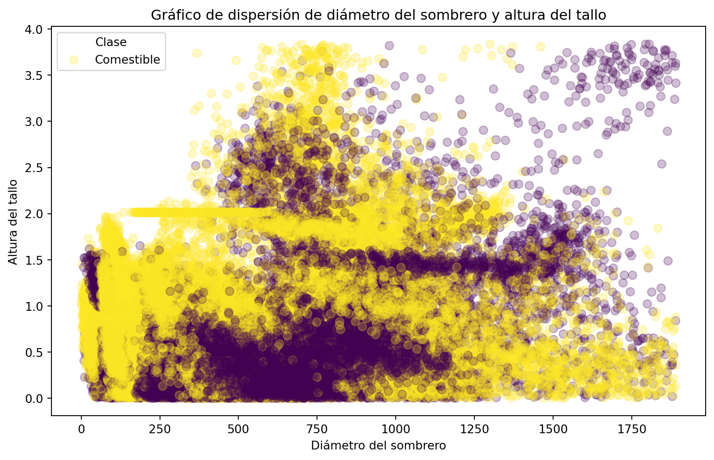

La visualización de datos es una herramienta fundamental en el análisis de datos. Nos permite entender de manera rápida y sencilla la información que tenemos a nuestra disposición. En este tutorial vamos a ver cómo podemos visualizar datos en Python utilizando la librería matplotlib y seaborn, que son las librerías más populares para visualización de datos en Python.
En Google Colab, podemos visualizar datos utilizando las librerías matplotlib y seaborn ya que vienen instaladas por defecto. Para instalar estas librerías de forma local, podemos utilizar el siguiente comando en una celda de Jupyter Notebook:
!pip install matplotlib seaborn
Si estas usando un archivo con extensión .py, puedes instalar las librerías utilizando el comando en la terminal:
pip install matplotlib seaborn
Matplotlib
Matplotlib es una librería de visualización de datos en 2D que produce gráficos de alta calidad en una variedad de formatos y entornos. En este tutorial vamos a ver cómo podemos utilizar matplotlib para visualizar datos en Python.
Utilizaremos los datos de hongos que vimos en el tutorial anterior para hacer una visualización de los datos. Primero, vamos a cargar los datos.
Código
import pandas as pdurl ="https://raw.githubusercontent.com/Christian-F-Badillo/Ciencia-de-datos-con-Python-de-estadistica-descriptiva-a-redes-neuronales/main/data/archive/mushroom_cleaned.csv"data = pd.read_csv(url)data.head()
cap-diameter
cap-shape
gill-attachment
gill-color
stem-height
stem-width
stem-color
season
class
0
1372
2
2
10
3.807467
1545
11
1.804273
1
1
1461
2
2
10
3.807467
1557
11
1.804273
1
2
1371
2
2
10
3.612496
1566
11
1.804273
1
3
1261
6
2
10
3.787572
1566
11
1.804273
1
4
1305
6
2
10
3.711971
1464
11
0.943195
1
Una gran ventaja de usar pandas y matplotlib juntos es que podemos visualizar los datos directamente desde un DataFrame. Por ejemplo, podemos hacer un histograma de la variable cap-shape.
Código
import matplotlib.pyplot as pltdata["cap-shape"].value_counts().plot(kind="bar")plt.title("Distribución de la forma del sombrero")plt.show()
En este caso, utilizamos el método value_counts() para contar el número de valores únicos en la columna cap-shape y luego utilizamos el método plot() para hacer un histograma de los valores. Finalmente, utilizamos el método show() para mostrar el gráfico.
El parametro kind nos permite especificar el tipo de gráfico que queremos hacer. En este caso, utilizamos bar para hacer un histograma de barras. De acuerdo a la documentación de plot(), los valores válidos para el parametro kind son:
line: Gráfico de línea.
bar: Gráfico de barras.
barh: Gráfico de barras horizontales.
hist: Histograma.
box: Diagrama de caja.
kde: Estimación de densidad de kernel.
density: Estimación de densidad.
area: Gráfico de área.
pie: Gráfico de pastel.
scatter: Gráfico de dispersión.
hexbin.: Gráfico que puede considerarse una mezcla de un histograma y un gráfico de dispersión.
Además, podemos personalizar el gráfico utilizando los métodos de matplotlib. Por ejemplo, podemos cambiar el color de las barras y agregar etiquetas a los ejes. A pesar de la utilidad de pandas y matplotlib, a veces es necesario utilizar matplotlib directamente para hacer gráficos más complejos.
El primer paso para crear un gráfico con matplotlib es crear una figura y un eje. Luego, podemos utilizar los métodos de matplotlib para personalizar el gráfico. Por ejemplo, podemos hacer un gráfico de dispersión de las variables cap-diameter y stem-height.
Código
fig, ax = plt.subplots()ax.scatter(data["cap-diameter"], data["stem-height"])ax.set_title("Gráfico de dispersión de diámetro del sombrero y altura del tallo")ax.set_xlabel("Diámetro del sombrero")ax.set_ylabel("Altura del tallo")plt.show()
En este caso, utilizamos el método subplots() para crear una figura y un eje. Luego, utilizamos el método scatter() para hacer un gráfico de dispersión de las variables cap-diameter y stem-height. Finalmente, utilizamos los métodos set_title(), set_xlabel() y set_ylabel() para personalizar el gráfico.
Editemos aún más el gráfico para que sea más informativo. Podemos cambiar el color de los puntos, agregar una leyenda y cambiar el tamaño de los puntos.
Código
fig, ax = plt.subplots(figsize=(10, 6))ax.scatter(data["cap-diameter"], data["stem-height"], c=data["class"], s=50, alpha=0.25)ax.set_title("Gráfico de dispersión de diámetro del sombrero y altura del tallo")ax.set_xlabel("Diámetro del sombrero")ax.set_ylabel("Altura del tallo")ax.legend(labels=["Comestible", "Venenoso"], title="Clase")plt.show()

En este caso, utilizamos el parametro c para cambiar el color de los puntos de acuerdo a la variable class, el parametro s para cambiar el tamaño de los puntos y el parametro alpha para cambiar la transparencia de los puntos. Además, utilizamos el método legend() para agregar una leyenda al gráfico.
Ahora veamos como hacer un histograma de las variables cap-diameter usando los métodos de matplotlib.
Código
fig, ax = plt.subplots()ax.hist(data["cap-diameter"], bins=20, color="skyblue", edgecolor="black")ax.set_title("Histograma del diámetro del sombrero")ax.set_xlabel("Diámetro del sombrero")ax.set_ylabel("Frecuencia")plt.show()
En este caso, utilizamos el método hist() para hacer un histograma de la variable cap-diameter. El parametro bins nos permite especificar el número de contenedores en el histograma. Además, utilizamos los parametros color y edgecolor para cambiar el color de las barras y el color de los bordes de las barras.
Ahora filtremos los datos para los hongos comestibles.
Hagamos un gráfico de hexbin de las variables cap-diameter y stem-height para los hongos comestibles.
Código
fig = plt.figure(figsize=(10, 6))ax = edible.plot.hexbin(x="cap-diameter", y="stem-height", gridsize=20, cmap="coolwarm")ax.set_title("Gráfico de hexbin de diámetro del sombrero y altura del tallo para hongos comestibles")ax.set_xlabel("Diámetro del sombrero")ax.set_ylabel("Altura del tallo")plt.show()
<Figure size 960x576 with 0 Axes>
En un gráfico de hexbin, los puntos se agrupan en hexágonos y el color de los hexágonos se basa en el número de puntos en cada hexágono. En este caso, utilizamos el parametro gridsize para especificar el tamaño de los hexágonos y el parametro cmap para cambiar el mapa de colores.
La sintaxis que usamos aquí es otra forma de hacer los gráficos. Primerop creamos la figura con plt.figure() y luego utilizamos el método plot.hexbin() para hacer el gráfico de hexbin que nos ofrece la clase DataFrame de pandas. Finalmente, utilizamos los métodos set_title(), set_xlabel() y set_ylabel() para personalizar el gráfico.
Seaborn
Seaborn es una librería de visualización de datos en Python que se basa en matplotlib y proporciona una interfaz de alto nivel para crear gráficos atractivos y informativos. En este tutorial vamos a ver cómo podemos utilizar seaborn para visualizar datos en Python.
Primero, hagamos un gráfico de cajas de las variables cap-diameter para los hongos comestibles y venenosos.
Código
import seaborn as snsfig, ax = plt.subplots(figsize=(10, 6))sns.boxplot(x="class", y="cap-diameter", data=data, ax=ax)ax.set_title("Diagrama de caja del diámetro del sombrero por clase")ax.set_xlabel("Clase")ax.set_ylabel("Diámetro del sombrero")plt.show()
Personalicemos el gráfico para que sea más informativo. Podemos cambiar el color de las cajas y los bigotes, agregar una leyenda y cambiar el tamaño de las cajas.
Código
fig, ax = plt.subplots(figsize=(10, 6))sns.boxplot(hue="class", x="class", y="cap-diameter", data=data, ax=ax, palette="Set2", linewidth=2)ax.set_title("Diagrama de caja del diámetro del sombrero por clase")ax.set_xlabel("Clase")ax.set_ylabel("Diámetro del sombrero")plt.show()
Ahora aumentemos el tamaño de la letra de las etiquetas de los ejes, agreguemos que los valores atípicos se muestren como puntos y cambiemos el estilo de las cajas.
Código
fig, ax = plt.subplots(figsize=(10, 6))sns.boxplot(hue="class", x="class", y="cap-diameter", data=data, ax=ax, palette="Set2", linewidth=2, fliersize=5, notch=True)ax.set_title("Diagrama de caja del diámetro del sombrero por clase", fontsize=16)ax.set_xlabel("Clase", fontsize=14)ax.set_ylabel("Diámetro del sombrero", fontsize=14)plt.show()
Usemos los mismos datos para crear un gráfico de violín de las variables cap-diameter para los hongos comestibles y venenosos.
Código
fig, ax = plt.subplots(figsize=(10, 6))sns.violinplot(x="class", y="cap-diameter", data=data, ax=ax, hue="class", palette="Set1")ax.set_title("Gráfico de violín del diámetro del sombrero por clase", fontsize=16, fontweight="bold")ax.set_xlabel("Clase", fontsize=14)ax.set_ylabel("Diámetro del sombrero", fontsize=14)plt.show()
En un gráfico de violín, la forma del violín representa la distribución de los datos. En este caso, utilizamos el parametro hue para cambiar el color de los violines de acuerdo a la variable class y el parametro palette para cambiar la paleta de colores. Nos incluye un gráfico de caja en el interior del violín, que nos permite ver la distribución de los datos de una manera más detallada. Modifiquemos el gráfico para que sea más informativo.
Código
fig, ax = plt.subplots(figsize=(10, 6))sns.violinplot(x="class", y="cap-diameter", data=data, ax=ax, hue="class", palette="Set1", inner="box", fill=False, inner_kws={"linewidth": 1.5, "box_width": 17, "whis_width":2})ax.set_title("Gráfico de violín del diámetro del sombrero por clase", fontsize=16, fontweight="bold")ax.set_xlabel("Clase", fontsize=14)ax.set_ylabel("Diámetro del sombrero", fontsize=14)plt.show()
Aquí hemos especificado que el interior del violín sea un gráfico de caja con el parametro inner="box". Además, hemos cambiado el ancho de las cajas con el parametro inner_kws={"box_width": 17} y el ancho de los bigotes con el parametro inner_kws={"whis_width": 2}. Con el parametro fill=False, hemos eliminado el relleno del violín.
Un gráfico útil a la hora de analizar datos es la matriz de correlación. La matriz de correlación nos permite ver cómo se relacionan las variables entre sí. En seaborn, podemos hacer una matriz de correlación utilizando el método heatmap().
Código
fig, ax = plt.subplots(figsize=(10, 6))corr = data.corr()sns.heatmap(corr, annot=True, cmap="coolwarm", ax=ax, vmax=1, vmin=-1)ax.set_title("Matriz de correlación de las variables", fontsize=16, fontweight="bold")plt.show()
En este caso, utilizamos el método corr() para calcular la matriz de correlación de los datos y luego utilizamos el método heatmap() para hacer una matriz de correlación. El parametro annot=True nos permite mostrar los valores de la correlación en los cuadros y el parametro cmap="coolwarm" nos permite cambiar el mapa de colores. Los parametros vmax y vmin nos permiten especificar los valores máximos y mínimos de la escala de colores, sino se dan, se toman los valores máximos y mínimos de la matriz de correlación.
Una buena forma de presentar los datos de dos variables es juntar un gráfico de dispersión con un histograma. En seaborn, podemos hacer un gráfico de dispersión con histogramas utilizando el método jointplot().
En este caso, utilizamos el parametro kind="scatter" para hacer un gráfico de dispersión. Los valores válidos para el parametro kind son:
scatter: Gráfico de dispersión.
kde: Estimación de densidad de kernel.
hist: Histograma.
hex: Gráfico de hexbin.
reg: Gráfico de regresión.
resid: Gráfico de residuos.
Además con el parámetro hue podemos cambiar el color de los puntos de acuerdo a una variable categórica.
Código
fig = plt.figure(figsize=(10, 6))ax = sns.jointplot(x="cap-diameter", y="stem-height", data=data, kind="scatter", color="skyblue", hue="class")ax.set_axis_labels("Diámetro del sombrero", "Altura del tallo", fontsize=12)ax.fig.suptitle("Gráfico de dispersión de diámetro del sombrero y altura del tallo", fontsize=14, fontweight="bold", y =1.02)plt.show()
<Figure size 960x576 with 0 Axes>
Este gráfico nos permite ver la relación entre dos variables y la distribución de cada variable de forma simultánea. Vemos que no hay diferencias claras entre las variables cap-diameter y stem-height para los hongos comestibles y venenosos.
Seaborn tiene una función para mostrar gráficos con la relación entre todas las variables de un DataFrame. Esta función se llama pairplot().
Si son muchas variables, podemos seleccionar solo algunas para hacer el gráfico. En este caso, seleccionamos las variables cap-diameter, stem-height, cap-surface y cap-color.
Nos mostrará un gráfico de dispersión de todas las variables seleccionadas y un histograma de cada variable en la diagonal. Además, podemos cambiar el color de los puntos de acuerdo a una variable categórica con el parametro hue.
Ejercicios
Usando los datos de Iris, haz un gráfico de dispersión de las variables sepal_length y sepal_width con los puntos de acuerdo a la variable species.
Realiza un gráfico de caja de las variables petal_length y petal_width para las especies de Iris. Personaliza el gráfico.
Haz un gráfico de violín de las variables petal_length y petal_width para las especies de Iris. Otro gráfico de violín de las variables sepal_length y sepal_width para las especies de Iris. Personaliza los gráficos.
Crea una matriz de correlación de las variables de los datos de Iris. Personaliza el gráfico.
Combina un gráfico de dispersión con un histograma de las variables sepal_length y sepal_width de los datos de Iris. Personaliza el gráfico.
Crea un pairplot de las variables sepal_length, sepal_width, petal_length y petal_width de los datos de Iris, con los puntos de acuerdo a la variable species.
Selecciona dos variables y crea un histograma para cada una de ellas. Personaliza el gráfico.
Conclusiones
En este tutorial, hemos visto cómo podemos visualizar datos en Python utilizando las librerías matplotlib y seaborn. Hemos visto cómo hacer gráficos de barras, gráficos de dispersión, histogramas, diagramas de caja, gráficos de violín, matrices de correlación, gráficos de dispersión con histogramas y gráficos de pares. Estas son solo algunas de las muchas formas en que podemos visualizar datos en Python. La visualización de datos es una herramienta poderosa que nos permite entender de manera rápida y sencilla la información que tenemos a nuestra disposición.
Para más información sobre matplotlib y seaborn, puedes consultar la documentación oficial: